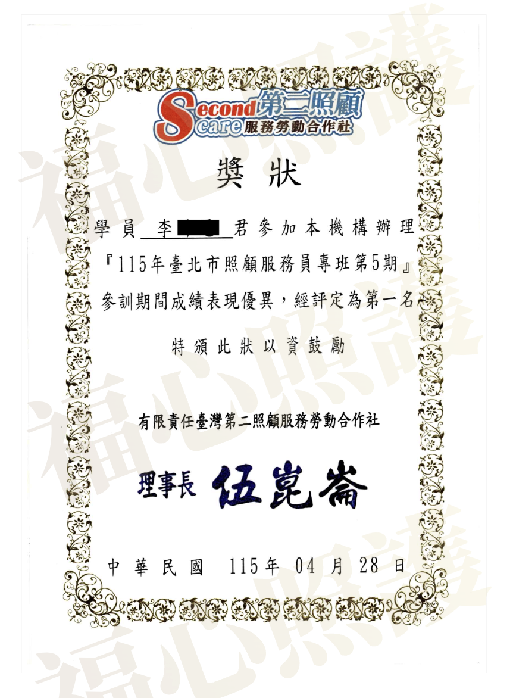

選擇福心，給家人真正合法的雙重保障
我們深知您的焦慮與對品質的堅持。福心拒絕來路不明的非法黑工，用官方權威特准執照與深厚臨床照顧經驗，為案家撐起最安心、合法的照護防線。

【官方雙重認證】合法合規最安心
坊間許多看護機構僅有經濟部公司登記，卻缺乏法定的就業服務許可。福心管理顧問除了擁有合法公司法人身分，更榮獲新北市政府核發之「私立就業服務機構許可證」（新北私就字第 068 號）。
雙重官方認證，代表我們的財務、流程與人力皆受政府嚴格審查，價格契約化、責任清晰化。請家屬務必選擇擁有雙重保障的合法機構，才能真正遠離黑工與無預警棄單的風險。

【專業經驗團隊】嚴選具備深厚經驗人才
優質的照顧，來自於扎實的訓練與對細節的專注。福心的合作夥伴與照護團隊皆經過政府指派機構之專業特訓。
旗下夥伴不僅具備合格證照，更有在專業班期中榮獲評定第一名結業的優秀照護人才。我們堅持引進擁有豐富臨床經驗、自律且懂得醫囑落地的夥伴，不只是勞力勞動，更是能讓家屬放心託付的專業陪伴。